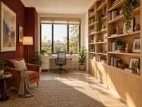
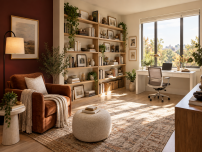
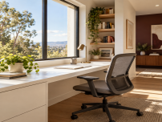
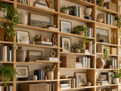
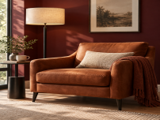

Seating
A single rust leather armchair and warm lamp against the burgundy focal wall.

AI ENVIRONMENT DESIGN · SPATIAL SYSTEM
A warm minimalist modern sanctuary designed as both a creative workspace and a place for reflective reading.
THE BRIEF
The room supports four to six hours of creative work and two to three hours of reading each day. It should showcase a personal collection without feeling cluttered and maximize natural light without losing warmth.
Three distinct zones—seating, display, and work—remain visually connected through a controlled material and color system.
01 · DESIGN SYSTEM
A single rust leather armchair and warm lamp against the burgundy focal wall.
Floor-to-ceiling oak shelves with books, art, pottery, plants, and personal objects.
A white minimalist desk and ergonomic gray mesh chair beside a large window.
02 · REFERENCES & PROMPTING





“Design a warm minimalist modern personal studio space… include a single-seater leather armchair, floor-to-ceiling wooden shelves, a white minimalist desk by a large window, and bright warm sunlight with golden tones throughout.”
Replacing “chair” with “single-seater armchair” stopped the model from introducing multi-seat sofas.
RGB values produced more consistent burgundy and cream surfaces than color names alone.
“Warm golden sunlight from a south-facing window” replaced cool, neutral renders.
“Gallery-like curation” created abundance without making the collection feel cluttered.
“Warm minimalist sanctuary” produced a more inviting room than the generic label “modern studio.”
03 · FINAL SCENE
SPATIAL WALKTHROUGH
This short, silent sequence is assembled from the actual final views in the Week 4 presentation.
REFLECTION
RGB values, precise furniture names, and consistent lighting language held the palette and program together across multiple perspectives.
Emotional descriptors shaped the aesthetic more effectively than broad style names. “Sanctuary” proved more useful than “modern.”
Define both what should remain constant and what may change, then generate multiple views to verify continuity.